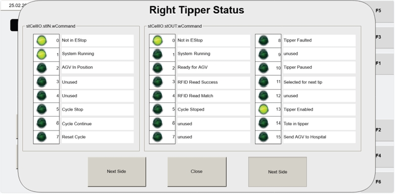

| Procedure ID | proc_open_wcommand_screen_check_command_word_values_left_right_tipper_v1 |
|---|---|
| Title | Open WCOMMAND Screen and Check Input/Output Command Word Values for Left/Right Tipper |
| Procedure Type | diagnostic |
| Primary Role | L2_support |
| Support Safe | Yes |
| Capability Tags | device_roster_state |
| Access Surface | tipper_hmi |
| Audience Roles | L2_support |
| Failure Pattern Tags | None |
| Validation Status | needs_sme_review |
| Merge Status | source_finalized |
On the Tipper HMI / WebVisu (VISU_MANCONTROL), open the WCOMMAND sub-screen to view the WCS input/output Command Word values for the selected tipper, and use NEXT SIDE to switch between left and right tipper communication.
Use when you need to verify the WCS communication as shown on the operator station tipper HMI by checking the input/output Command Word values for the left vs right tipper on the WCOMMAND screen.

Responsible role: L2_support
Instruction:
On the Tipper HMI / WebVisu (VISU), open the Operator Station maintenance manual control screen named VISU_MANCONTROL.
Expected result:
The VISU_MANCONTROL screen is displayed with the WCOMMAND button available (Item 10).
Stop or Escalate If:
Responsible role: L2_support
Instruction:
On VISU_MANCONTROL, press the WCOMMAND button (Item 10).
Expected result:
The WCOMMAND sub-screen opens and displays input and output Command Word values for the respective tipper to WCS.
Stop or Escalate If:
Responsible role: L2_support
Instruction:
On the WCOMMAND screen, confirm that the input and output Command Word values are displayed.
Expected result:
Input and output Command Word values are visible on the WCOMMAND screen.
Stop or Escalate If:
Responsible role: L2_support
Instruction:
Press the NEXT SIDE button to navigate between the left and right tipper views, and confirm the displayed communication changes accordingly.
Expected result:
When NEXT SIDE is pressed, the displayed communication between the WCS and the operator station updates for the other tipper (left vs right).
Stop or Escalate If: